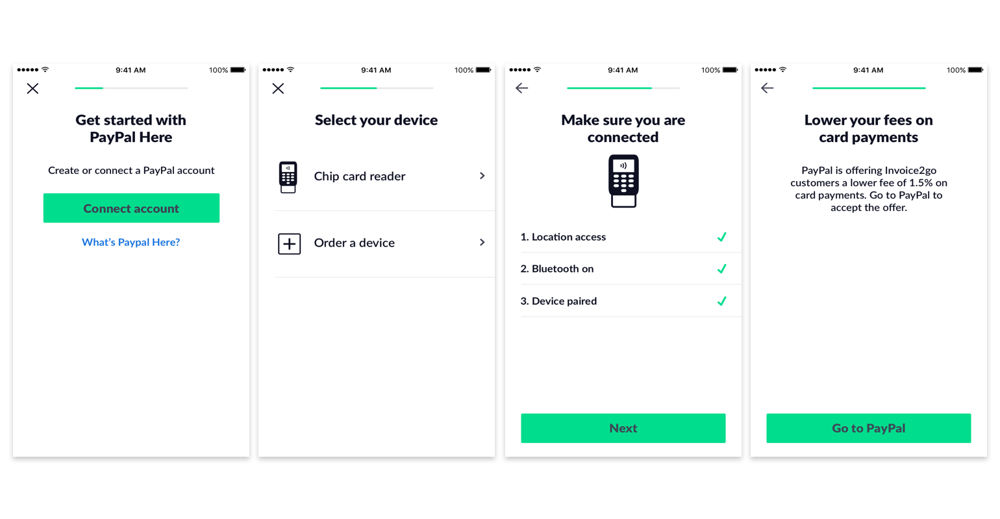
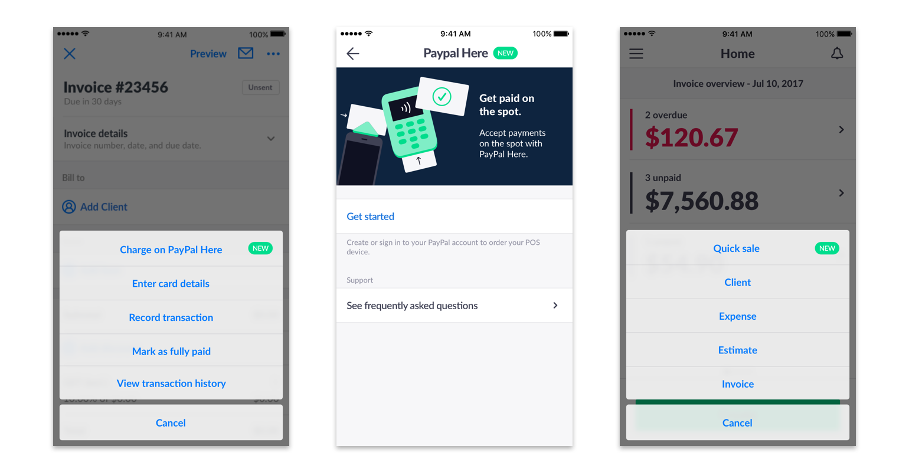
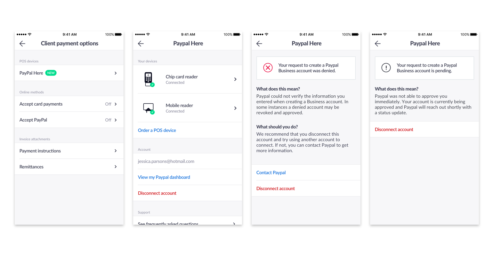
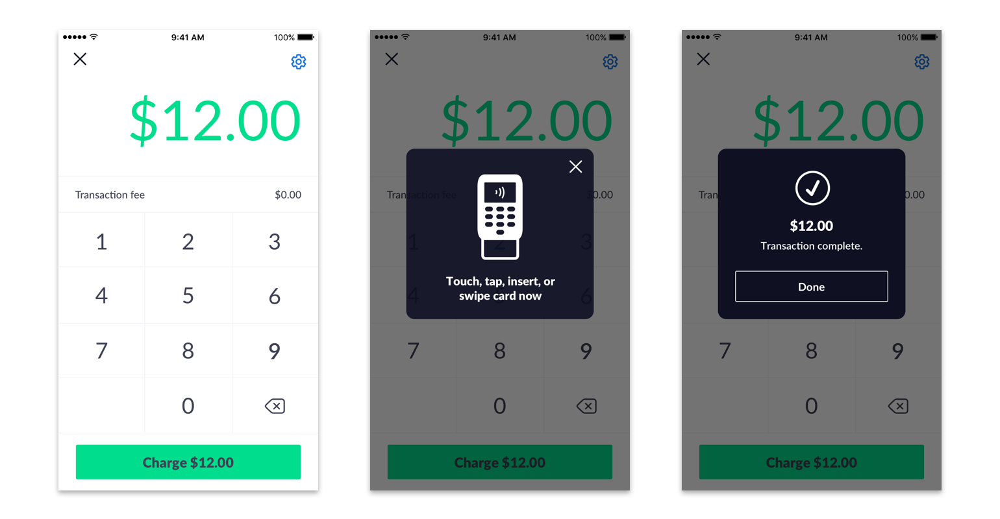

One of the biggest pain points that small business owners have is getting paid on time. A lot of our users collect money in person at the job site after completing the job. From research, we learned that a lot of customers use mobile point of sale devices to take payment.
We realized that there was a big opportunity for us to integrate a mobile point of sale solution within our experience. As a business this would allow us to increase our payment volume. Additionally, our users would be able to manage their business within one app. Currently users would use Invoice2go send invoices, but then have to switch to PayPal or Square to collect payment. We wanted to offer one solution to handle both. An important part of this project was that we were able to partner with PayPal. PayPal would provide their PayPal Here devices for our customers. We needed to create the experience within the app to use the devices.
I was the lead designer for this project. I worked with a product manager, iOS lead, Android lead, and 3 backend engineers.
Our design process for approaching projects
We kicked off the meeting with a workshop to help align all the teams involved. We had the engineers, product managers and my self agree upon the scope of the project. In order to deliver a succesful project we needed to design four main areas:
Entry points
Given that this feature would integrate into our existing experience we needed to design smart entry points that fit with our users workflow.
Onboarding
This was where a lot of time was spent. We spent time iterating on the setup process for business owners that wanted to use the MPOS device. In order for users to use an MPOS device they needed to create a new or sign into their exisitng PayPal account.
Management
We wanted to offer the ability to manage MPOS devices.
Payment experience
This was the repeat experience for users. Given that they completed onboarding and were setup to use an MPOS device what does the actual checkout experience look like.
Onboarding final
It was important that the onboarding experience felt seamless. It was important that users got through the flow to adopt the product. To reduce clutter, we separated the steps into independent screens. Previously, we had tested a variation with all the steps on one screen. We noticed that there was a higher drop off during testing when all the steps were on one screen.
Entry points
There are three main entry points to the MPOS feature. Users can access it through an invoice, within settings, and the homescreen.
Management
Within Settings, users can manage their MPOS devices. They can see which devices are connected, unlink their PayPal account, or order new devices.
Payment experience
This is where the actual payment charge happens. We wanted the screen to be clear by emphasizing the amount. Users could also easily edit the amount with a built in keyboard in the interface. We also designed feedback to guide the user through the payment process.
We recently released on November 2017. We are looking at metrics to understand the success of the product after initial launch. Some of things we are looking at are: